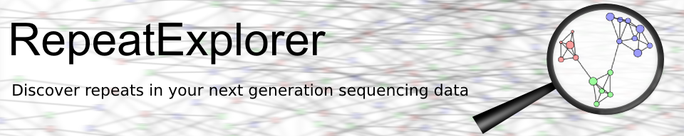

Developed and maintained by the Laboratory of Molecular Cytogenetics, Institute of Plant Molecular Biology, Biology Centre CAS, Ceske Budejovice, Czech Republic
This RepeatExplorer Galaxy portal is a part of services provided by ELIXIR (European Research Infrastructure for Biological Information). Please acknowledge this fact in your publications by adding a statement: “Computational resources for RepeatExplorer analysis were provided by the ELIXIR-CZ project (LM2023055), part of the international ELIXIR infrastructure.”

If you need help, need to increase a data quota, or want to report a problem, please contact server administrator. If you encounter an error while running a tool, please report a bug using the bug icon in the dataset history.
RepeatExplorer2, DANTE and DANTE_LTR tools use the REXdb database. REXdb is a comprehensive database of conserved protein domain sequences extracted from all types transposable elementa found in plants. More information about REXdb can be found in related publication or in REXdb repository.
REXdb versions included in the server:
The RepeatExplorer server provides a suite of tools designed for the comprehensive analysis of repetitive DNA sequences in genomic data. Here are the most common use cases for utilizing these tools:
Annotation of repeats directly from low coverage sequencing: It can be accomplished using the RepeatExplorer2 tool. This approach is ideal for initial exploration and annotation of repetitive sequences using low coverage data (refer to protocol 1 in the step-by-step protocols above).
Comparative analysis of repeats in multiple species from low coverage sequencing reads: Use protocol 2 for analyzing repetitive DNA across different species.
Tandem repeat annotation from low coverage sequencing: If your focus is primarily on tandem repeats, use the Tandem Repeat Analyzer tool (TAREAN). See protocol 3 in the step-by-step protocols for details.
Chip-Seq experiments: The ChIP-seq Mapper tool identifies centromeric repeats from CENH3 ChIP-seq data without the need for a complete genome assembly, leveraging assembled contigs from repeat clusters as a reference for mapping reads and highlighting significantly enriched repeats (refer to protocol 4).
Annotation of full-Length LTR-retrotransposons in genome assemblies: For detailed annotation of LTR-retrotransposons within assembled genomes, use the DANTE + DANTE_LTR tools. (see https://github.com/kavonrtep/dante_ltr for details)
Annotation of tandem repeats in genome assemblies: The TideCluster tools are designed for the annotation and analysis of tandem repeats within genome assemblies (see https://github.com/kavonrtep/TideCluster for more information).
Novak, P., Neumann, P., Macas, J. (2020) – Global analysis of repetitive DNA from unassembled sequence reads using RepeatExplorer2. Nature Protocols 15:3745–3776.
Novak, P., Neumann, P., Pech, J., Steinhaisl, J., Macas, J. (2013) - RepeatExplorer: a Galaxy-based web server for genome-wide characterization of eukaryotic repetitive elements from next-generation sequence reads. Bioinformatics 29:792-793.
Classification of repetitive elements using REXdb:
Neumann, P., Novak, P., Hostakova, N., Macas, J. (2019) – Systematic survey of plant LTR-retrotransposons elucidates phylogenetic relationships of their polyprotein domains and provides a reference for element classification. Mobile DNA 10:1.
The principle of repeat identification implemented in the RepeatExplorer:
Novak, P., Neumann, P., Macas, J. (2010) - Graph-based clustering and characterization of repetitive sequences in next-generation sequencing data. BMC Bioinformatics 11:378.
Using TAREAN for satellite repeat detection and characterization:
Novak, P., Robledillo, L.A.,Koblizkova, A., Vrbova, I., Neumann, P., Macas, J. (2017) - TAREAN: a computational tool for identification and characterization of satellite DNA from unassembled short reads. Nucleic Acid Research 45:e111
Novak, P., Hostakova, N., Neumann, P., Macas, J. (2024) – DANTE and DANTE_LTR: computational pipelines implementing lineage-centered annotation of LTR-retrotransposons in plant genomes. bioRxiv doi: https://doi.org/10.1101/2024.04.17.589915
RepeatExplorer is provided as free, public, Internet accessible service, in the hope that it will be useful, but WITHOUT ANY WARRANTY. Data transfer are encrypted, but data storage is not. If there are restrictions on the way your research data can be stored and used, please consult your local institutional review board or the project PI before uploading it to this Galaxy server. If you have protected data, large data storage requirements, or short deadlines you are encouraged to set up your own local Galaxy instance with RepeatExplorer Alternatively, you can install only RepeatExplorer and use its command line version. If you need help with RepeatExplorer or you want to report a problem, please contact server administrator.